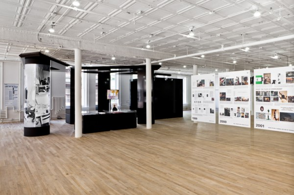
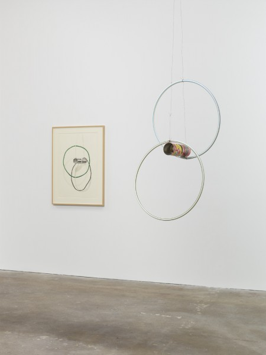

-
The Three R’s
by Zak Kitnick October 11, 2012
installation view of works by Mary Simpson, Josephine Pryde, Ull Hohn. courtesy of Bortolami.
now I am quietly waiting for
the catastrophe of my personality
to seem beautiful again,
and interesting, and modern.
Curated by Tom Burr
Bortolami
Bortolami’s artist-curated shows are consistently excellent,
and Tom Burr’s is every bit as good as Rich Aldrich’s ‘Addicted to Highs and Lows’.
Visual relationships between work, and invisible relationships between people
result in a doubly potent presentation
(all without the transformative authorship that’s so important in Burr’s own work).
Josephine Pryde’s slowly spinning wicker and hook sculptures alone are worth a visit.
installation shot of Irwin’s ‘Dotting the i’s, Crossing the t’s,’ 2012. courtesy of Pace Gallery.
Dotting the i’s & Crossing the t’s
Robert Irwin
Pace
If it looks too good to be true, it probably is.
But if you can barely see it, thats the best.
Flood’s ‘Endless Column,’ 2012. courtesy of Zach Feuer.
ARTSTAR
Mark Flood
Zach Feuer
A slight variation on a tried and true formula.
Hang the walls with benign, decorative canvases
(that look like the same painting everybody seems to be making),
and radicalize/conceptualize/frame with one tired attempt to offend.
The result is everybody win$.
installation shot of Zitell’s ‘Fluid Panel State.’ courtesy of Andrea Rosen Gallery.
Fluid Panel State
Andea Zittel
Andrea Rosen
That Zittel is weaving new currency with old credit could not be further from the truth.
As it unfolds, it is generous and generative, its strength in a mind-boggling thoroughness in thought and process.
From Alighiero Boetti to Sol LeWitt, and now Zittel,
Fluid Panel States affirms the great potential of following instructions to their inconclusive end.
Installation view of works by front: Allen Ruppersberg & from left to right: Mark Dion, Steve Wolfe, Sean Landers. courtesy of Friedrich Petzel.
The Feverish Library
group show
Friedrich Petzel
Water water everywhere but not a drop to drink.
Or, a lot of books but nothing to read.
In addition to anything else,
The Feverish Library makes a compelling case that,
book-art, is a category, that includes a lot of people.
installation view of Smith’s ‘Source,’ 1967. courtesy of Matthew Marks.
Source
Tony Smith
Matthew Marks
It’s real steel sculpture.
And reminder of shifts in scale.
Now the best sculpture fits the consumer, the residential, the studio apartment, the efficiency,
but 100 years after this birth, Tony Smith’s enormous influence isn’t measured in weight, mass or volume.
installations shot of Bernadette Corporation’s ’2000 Wasted Years,’ 2012. courtesy of Artists Space.
2000 Wasted Years
Bernadette Corporation
Artists Space
BC is pretty good at making things that look pretty good,
and pretty smart at making things that look pretty smart.
In their exhibition, BC courageously Recycles and Reuses old images, objects, and ideas
until they’re Reduced to looking pretty bad and pretty stupid.
But waste, the removal not creation of value, might be the point,
and this show (billed as a retrospective) seems like the end of the line.
installation view of Taylor’s ‘Pass the Peas and Can Study,’ 2012. courtesy of David Zwirner.
Pass the Peas and Can Studies
Al Taylor
David Zwirner
It’s remarkable how many qualities of the tin can the label retains when removed.
The physiological trompe l’oeil of collage bridges the gap as Taylor moves back and forth between 2 and 3D.
The best works lay somewhere between Richard Tuttle and Kenji Fujita.
Gelitin’s ‘Latte Macchiato,’ 2012. courtesy of Greene Naftali Gallery.
The Fall Show
Gelatin
Greene Naftali
Very funny!
With painted bases, found objects and mannequin heads, at first glance it looks like another Rachel Harrison show.
Another funny thing is that the sculptures fall.
Simon Starling’s ‘Venus Mirrors (05/06/2012, Hawaii & Tahiti Inverted)’, 2012. courtesy of Casey Kaplan.
Triangulation Station A
Simon Starling
Casey Kaplan
Who is the audience?
There are a lot of different kinds of art.
This is one.